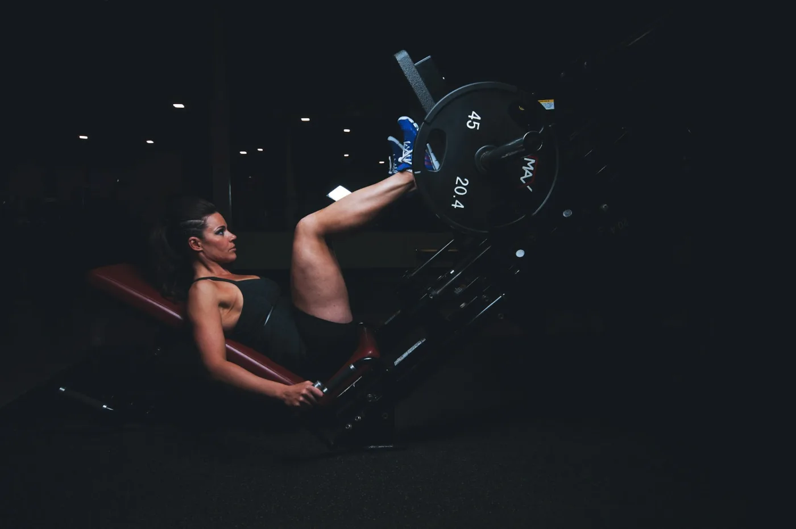
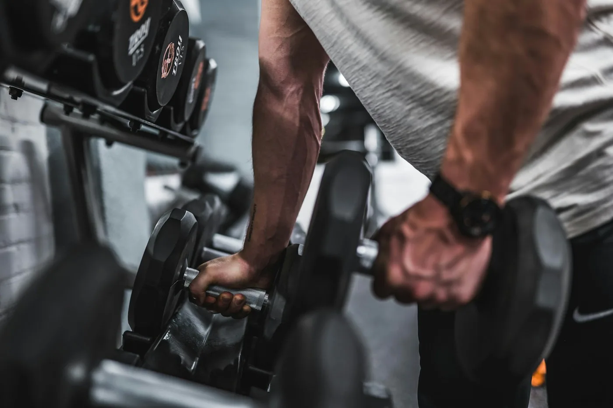
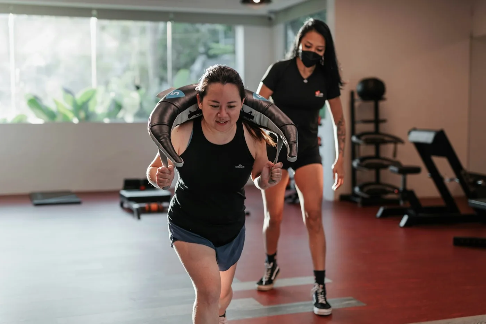
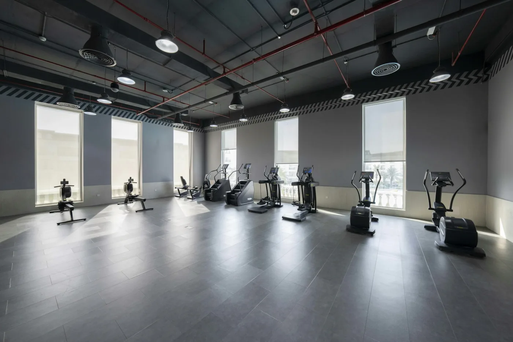

いまの生活と、目標を聞く
普段の運動、仕事の姿勢、通えるペース。続け方を決めるための相談から始めます。

STRENGTH / BALANCE / EVERYDAYBUILT AROUND YOU.
運動を始めたい理由は、一人ひとり違う。
体力をつけたい。姿勢を見直したい。
無理なく続けられる習慣をつくりたい。
AXISは、いまの体と生活から考える
パーソナルトレーニングのための場所です。
YOUR PROGRAM
気になる目的を選ぶと
トレーニングの考え方が変わります。


指導のイメージ / STOCK PHOTOGRAPHFIRST SESSION / 体験の一例
普段の運動、仕事の姿勢、通えるペース。続け方を決めるための相談から始めます。
基本の動きを確認しながら、使いやすい負荷で体を動かします。
ジムに来る日だけでなく、自宅や仕事の合間にできる運動も整理します。
MEMBERSHIP / SAMPLE PRICES
ひとりで抱え込まず、必要な分だけ。
通うペースは相談して決められます。
料金はサイト制作例のための架空の設定です。
実際の契約・お支払いはできません。
¥18,000税込 / 月
¥34,000税込 / 月
¥64,000税込 / 月
入会金なしを想定した料金表示のサンプルです。
A PLACE TO RESET.

予約して、通う生活の中に、運動する時間を確保する。
目的を、共有する今日取り組むことを、始める前に確かめる。
変化を、記録する重さだけでなく、動きや続けやすさも振り返る。
BEFORE YOU START
まずは動きや体力を確認し、無理のない内容から始めます。体調や既往歴に応じて、医療機関への確認が必要な場合もあります。
運動の目的や生活習慣を伺い、基本動作を確認。その後、短いトレーニングを体験していただきます。
動きやすい服装、室内シューズ、タオル、飲み物をご用意ください。
YOUR FIRST MOVE.
体験プログラム・時間帯を選べる
予約画面の動作サンプルです。